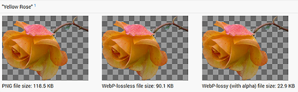
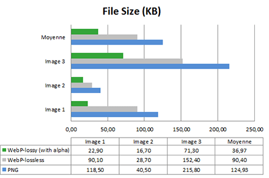
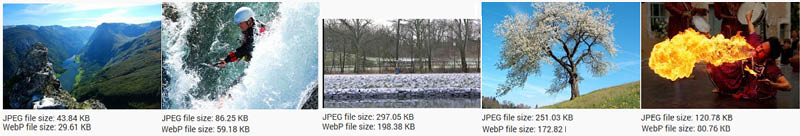
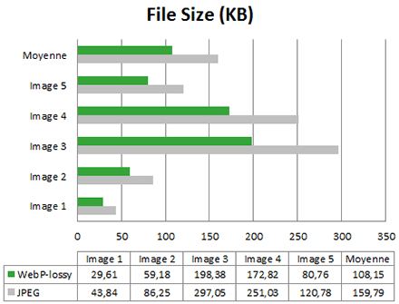
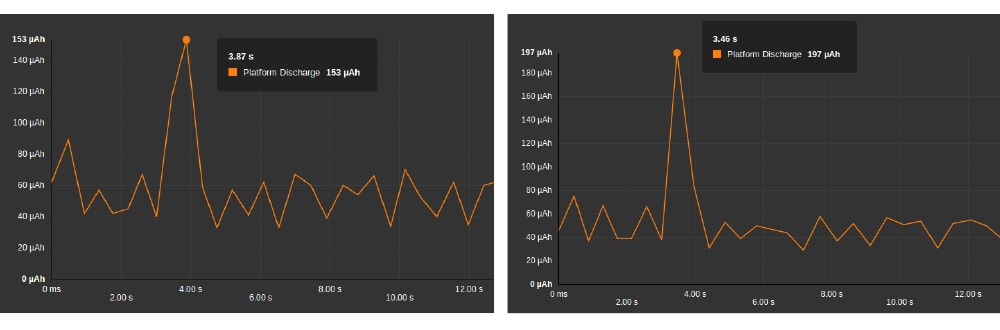

Webp is the new image format offered by Google, who promises a reduction between 30 and 80% in transfer size. In addition, this format would be more suitable for current processors. But what should we expect in terms of energy consumption on the user’s device?
Webp format
Webp is a matrix format just like PNG or JPEG. It can handle lossless compressions like PNG, as well as lossy ones like JPEG.
This type of format is currently acknowledged by Chrome, Chrome for Android and Opera.
Cependant However, the controversy was started by the Mozilla foundation which considers the format isn’t as beneficial as claimed.
By the way, Mozilla is working on its own on JPEG optimization : MozJPEG. Here’s a link to understand how to manage those implementation issues : Google WebP
Now, what’s up with this new format’s efficiency? The measure of consumed energy needed to display images will answer this question!
MEASUREMENT METHODOLOGY
In order to do that, I use my favorite tool (you know what’s coming, right?): the Power Test Cloud service by GREENSPECTOR.
Methodology is the following :
- Measurement is realized on a real smartphone, a Nexus 6, hosted and managed by GREENSPECTOR ;
- We start Chrome and have then access to image examples provided by Google ;
- We repeat the process twice, because two measures are always better than one.
Before going further, we have a couple points of criticism about our own protocole :
- We are using Google images : are they really representative? We’ll assume so.
- We evaluate the unit cost of displaying images, not integrating them in a more general webpage. That is why we are here for after all.
Format comparison : Webp (lossless and lossy) versus PNG

For this test, we picked the three first images in the Google gallery.
First of all, let’s check the images’ size :

Result is pretty obvious : Webp images are on average 27% lighter than PNG, it even reaches 70% for the lossly version. Promises are kept and respected so far. Let’s have a look at energy consumed on the smartphone whenever it displays those images in the browser :

Aoutch. On average, WebP lead to 1.5% more energy consumption. There is a gain only for image 3 – just when we compare the lossy Webp with the PNG. Regarding image 1, we notice a decrease of 3,8%. Finally, we can see that the lossy Webp with transparency is even more energy-hungry than the lossless Webp. To me, that’s pretty surprising!
In the end, the PNG format is more interesting in terms of energy consumption. However, if you focus on network gains only, then the Webp format will be more appropriate. This statement is even greater when it comes to the lossy Webp with transparency. This could be explained with a rendering algorithm less efficient than PNG, which cancels all energy gains provoked by the nettwork impact reduction.
« Lossy » format comparison : Webp versus JPEG

For this test, we chose five images from the Google gallery
Again, let’s check first images’ size.

Once again here promise is respected: the size gain brought by Webp is on average 30%. Now let’s have a look at energy consumption.

In 4 out of 5 cases, gains brought by Webp compared to JPEG are interesting (between 2% and 8%). Because of the specific case of image 4, the gain average settles at 2.4%.
If we look more in depth at energy consumption curves, we can notice that the Webp consumption peak is the lowest one of all:

We also observe that Webp solicits less battery than JPEG.
CONCLUSION
It is obvious that the Webp format allows a lower image size than the other formats. It is beneficial for the internet network as a whole, telecom operators in particular and final users even more specifically.
We also identified energy gains for lossy images going up to 8% compared to JPEG.
However, in some minority cases for the lossy and in all cases for the lossless, we noticed bigger energy consumptions for Webp than for other traditional formats. In the case you want lossless images (for logos, images with text…), then PNG remains the best option in terms of energy.
Explanation : as images are lighter, it seems like the radio cell is less solicited thus there is less energy consumed. However, when we have a look at the CPU occupation, Chrome spends some time processing to decompress Webp. On a smartphone, network gains are limited, borderline annihilated, because of the additional CPU treatment cost.
Conclusion following the conclusion :
Gains in size brought by Webp are real for the network. Associated with an energy consumption decrease, even weak, it makes WebP an interesting format in terms of efficiency as an alternative to JPEG. However, we will have to wait for the alternative to PNG.
Lastly, let’s note that jobs are numerous in this domain. Thus, for the alternative to JPEG, a convergence towards other technological ameliorations like HTTP2, could lead to even greater gains.